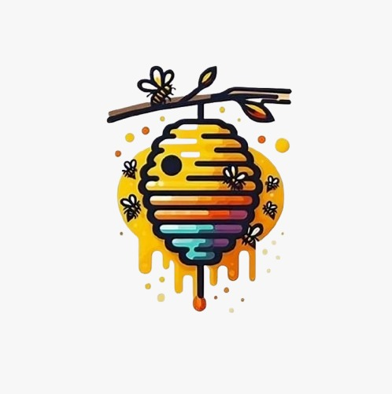

Buzz Fuzz:
- Bees can recognize human faces, just like us!
- Bees communicate through a "waggle dance" to tell others where to find flowers.
- Some bees can count up to four!
- Bees play a vital role in pollinating crops, which is crucial for food production.
- Honeybees can fly up to 15 miles per hour and beat their wings 200 times per second!
- Male bees (drones) do not have stingers and only exist to mate with the queen.
- Bees are responsible for pollinating one-third of the world’s food crops.
- Bees have five eyes—two large compound eyes and three smaller ones on top of their heads.
- A single bee colony can pollinate up to 300 million flowers in one day!
- Bees produce honey, which has antibacterial properties and can never spoil.
- !!!!Developed By: Arshan; Anika; Kunal; Anusha; Sami with the Sweetness of Honey!!!!